结业报告
一、概述
在此次的Web网页设计当中，我以BootStrap为架构做了5个静态网页，我选择了我们当前面对比较多的人面对的问题作为主题，即考研。
一共有 5 个网页，分别是首页，用来介绍考研相关的内容；然后是考研数学、考研英语、考研政治和考研专业课的页面，用来介绍 复习内容、复习方法以及相关老师等等，每个页面也用不同的方式展示了不同的内容。5 个静态网页中分别展示了显示文字、图片，播放视频、 音频等功能，并结合CSS对网页进行美化。
5 个静态网页中都有的内容是导航条、页面覆盖部分展示和底部组成。主页的导航条主要用于导航到各个页面当中，其他网页的导航 条主要用于导航到本网页中的特定部分；页面覆盖部分展示是使用“考研成功”的字样作为背景图片，“金榜题名”为字样进行显示的， 主要用于统一 5 个网页的基调；底部主要用于展示部分信息和相关链接。以上的三个内容都可以使这 5 个网页看起来更统一。
二、网页结构
1、首页
首页的内容主要是对考研的介绍，主要是以文字和图片的形式介绍的。页面顶部设置了导航条，分别可以跳转到本页面的考研介绍部分， 和其他考研数学、考研英语等页面，并且文字前面还有符号做点缀，在后面也提供了一个搜索框，搜索框内还有一个放大镜的图片代表搜索。 导航条是设置的固定在顶部的导航条，并将背景设置为透明的颜色，这样就可以在不遮挡原文的条件下又可以显示导航条中的内容。
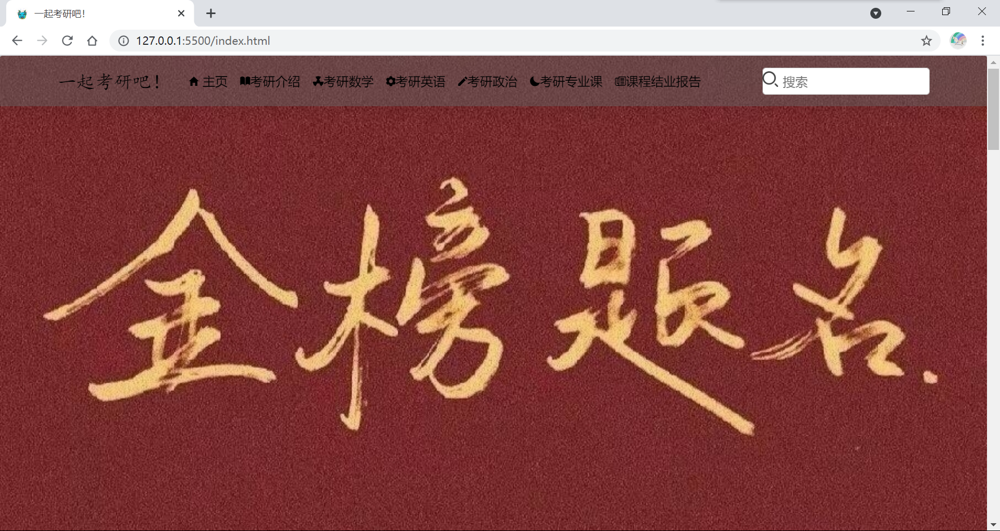
首先进来的主页面就是一个“金榜题名”的图片，使用mask标签覆盖了整个页面，以section标签划分区段， 把页面分成几个不同的段落，用不同的段落区分网页中不同的内容。后面几个区段就是使用section作为区分，使用栅格的方式对文字和图片进行展示的效果。
2、考研数学页
考研数学页与主页的导航条样式相同，但是跳转的内容不同。考研数学页的导航条内的“主页”是跳转到首页的，其他内容都是在本页 内进行跳转。该页面首先是用样式展示了考研数学需要准备的三个科目，然后对考研数学的分类进行了总结，设置了左右箭头，点击左右箭头可以 切换图片，该部分还采用了script标签，结合html对点击事件需要产生的结果进行了设置。
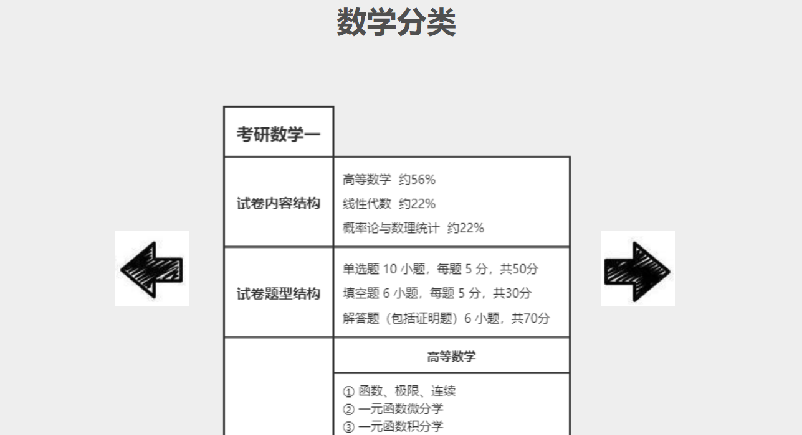
然后下一个区间是视频的播放界面，使用video标签放置视频，并设置第一个视频自动静音播放，其他视频则需要点击播放。 利用栅格设置一行只能放置两个视频，这样看起来会比较美观一点。视频中有暂停/播放按键、音量调节按钮、全屏播放按键和下载的按键。
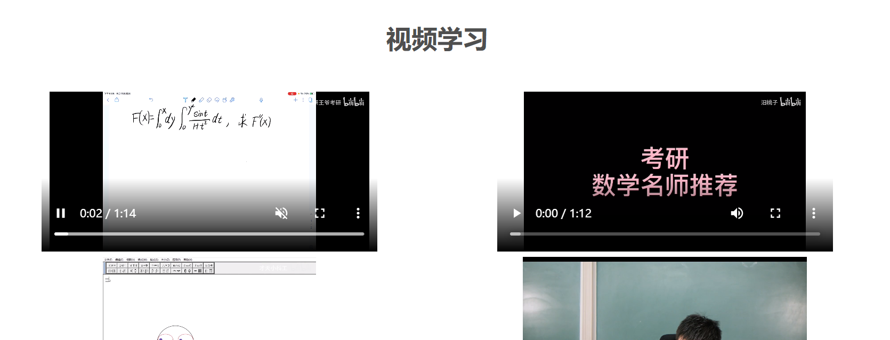
该页面最后一个区间是教师介绍的部分，该部分使用栅格分成了两部分，左边部分用来放教师的图片，右边部分是用来放置教师 的相关简介。
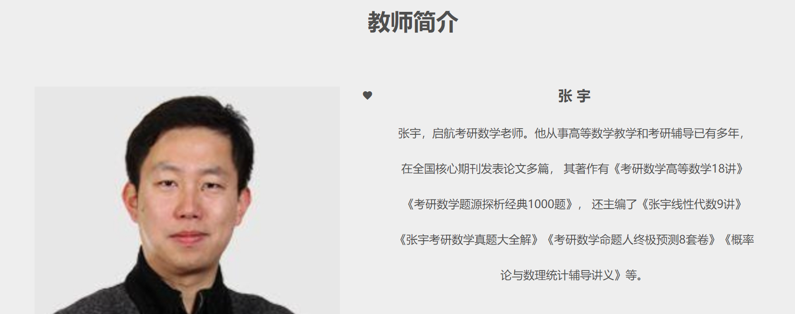
3、考研英语页
首先介绍了考研英语的分类，分为考研英语一和考研英语二，是使用两个card标签实现的，标签中存放了图片内容 、文字内容、 和按键（包括超链接）。在一个页面内展示两个考研英语的卡片，可以更好的对比两者的相同点和不同点。然后在下一个区段中插入了三段音频， 点击可以播放，点击下面的“MORE”按键还可以超链接到英语音频网站中。
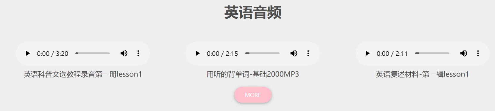
最后一个区段也是用于教师简介的，但是与考研数学界面不同的是，此页面是使用的上下结构对教师进行简介的，即上面放置教师的 图片，下面展示教师的简介。
4、考研政治页
考研政治页也是首先对考研政治的科目进行了简介，是采用来回滚动的方式展示了六个考研政治的科目，点击滚动中的图片还有放大 的作用，点击放大之后再次点击可以取消查看图片。
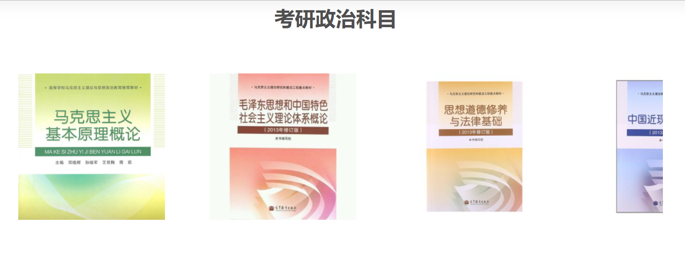
后面采用的是卡片的形式介绍了试卷内容结构和试卷题型结构，调整行间距使得卡片中的内容展示更加美观。 并在卡片中也添加了考研政治的相关链接。后面一个区段也是使用的卡片的形式展示了复习方法，与上面不同的是在卡片中添加了图片， 使得该页面更像一个卡片的形式。最后一个区段是考研政治资料的介绍，主要分为了两个片段，左边的片段用来放图片，右边又分为了两个片段， 分别用来放图标和书名。
5、考研专业页
首先对考研院校进行了简介，也是采用卡片的形式，与之前的卡片不同的是背景颜色采用了渐变的 方式，并且边角由方形变为了弧形。院校简介后面是展示的相关院校图片，点击相关院校的图片可以跳转 到相关院校的官网。
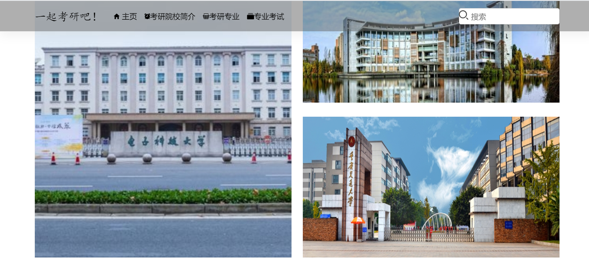
使用CSS样式使得左右两边的图片上下左右对齐，展示更加美观。
后面使用两张卡片对两个专业进行了简介，卡片中分别放置了图片、文字和超链接按键，形成了比较长的卡片的形式进行展示的。 最后专业考试方面的内容与前面的也相差不多，但是其中图片是调整radius设置弧度，最后设置成为圆形。
三、问题及解决方案
在做这 5 个静态网页的过程中，遇到了很多的问题，部分问题通过查询资料得到了解决，部分问题可能是因为能力不到的原因， 没能找到原因进行解决。
1、问题及解决方案
①问题：无法使div标签在中间显示。
解决：
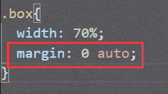
在样式表中或者在sytle中写上语句：margin: 0 auto;即可以让该部分内容在中间显示。
②问题：导航条更改不了颜色，在之前的代码的基础上，增加一个改变导航条颜色的CSS代码，发现更改不了导航条的颜色，然后直接在nav 导航条标签后面增加style添加背景颜色也行不通。
解决：总体看了一遍HTML代码和CSS代码发现新定义的改变导 航条颜色的代码与上面的代码有重定义的地方，而前面定义的样式使用了!important，即为最高级，删除其中一个就可以更改导航条 的颜色了。
③问题：opacity与rbga的问题。导航条中单独设置透明度和使用rbga设置透明度效果不相同。
background: gray;
opacity: 0.5;
展示效果：
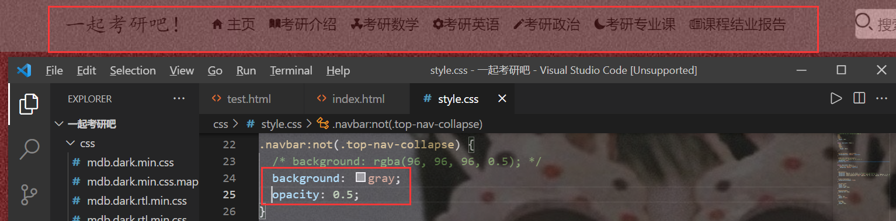
background: rgba(96, 96, 96, 0.5);
展示效果：
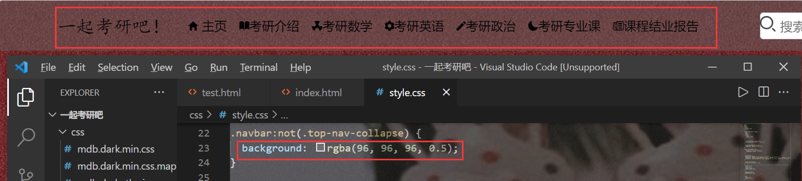
解决：rbga的设置只是针对导航条中的背景图片的透明度进行了设置，并没有对导航条中的颜色进行设置；而使用opacity 进行单独设置，则是对导航条背景颜色和导航条内的文字一同进行了设置，所以看起来文字的颜色会比较浅一点。
④问题：视频\音频自动播放的问题。直接使用video标签放置视频，所有视频会在网页中自动播放，声音也会播放出来，会显得比较嘈杂；音频也是如此，会同时播放。
解决：首先采用了静音播放的方式，使其不产生嘈杂的声音。但是对于视频来说还是比较眼花缭乱的，所以使用 audioObject.autoplay = false 语句抑制自动播放。
⑤问题：小图标不能进行显示。导航条中和页面内的一些内容中使用了小图标，发现本地打开的时候，不能进行显示图标。
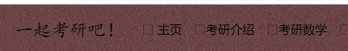
解决：因为小图标是存放在联网的CSS样式表中的，所以显示图标是需要连接到网络中的。联网之后，图标就可以正常显示了。
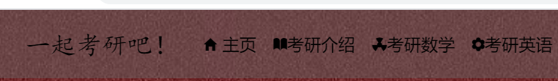
2、遗留问题
①在考研数学页面的第一个区段中，对下面的三张图片进行了展示，并且对设置了超链接，使其点击转向到相关网页，但是此时的a标签不起作用。在CSS中也没有设置其优先级。
②在视频播放当中，没能做到当第一个视频自动静音播放完成之后，接着下一个视频的自动静音播放。尝试过使用CSS样式表结合JS的方式，但是始终没能实现预期结果。
四、总结
本篇文章中用到最多的就是栅格了，我们可以利用栅格对我们的排版进行大块的划分，某一部分的大小，大中小屏幕的适应性都可以使用栅格进行调节。这次网页的制作也让我更加熟悉了栅格的使用。在本次制作网页的过程中，发现导航条的制作也可以不使用nav标签，可以直接使用div标签结合a标签使用，也可以达到导航条的效果，但是格式相对来说就会比较难设置。本次网页设计还完成了插入视频和插入音频的学习，对其自动播放、静音播放和暂停播放也有了一定的了解。使用card标签也是一种比较常见的方式，使用该标签可以对其样式进行各种更改，展现出不同的效果，使页面更加美化。
本次网页设计中遇到过很多的问题，有的问题通过查询资料也进行了解决，但有的问题还是没能解决，希望我能在今后的学习中，解决到我没能解决的问题。问题是最好的老师，通过发现问题和解决问题，能够在其中学习到很多东西。